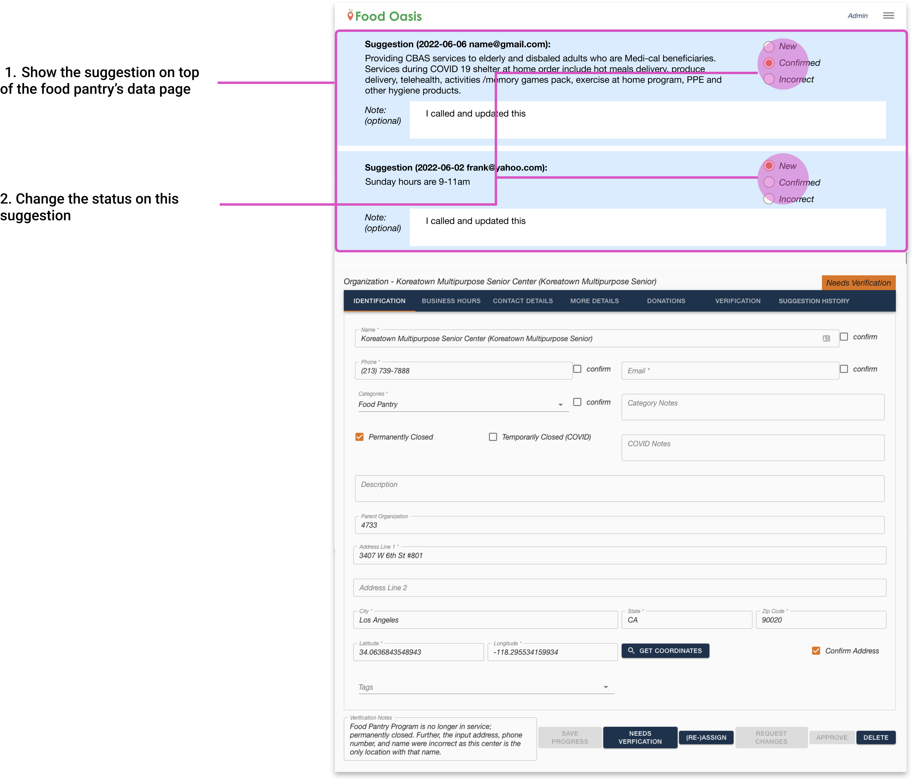

Verifying user suggestion
This project is to improve the admin’s workflow for crowdsourced data collection and verification.

This project is to improve the admin’s workflow for crowdsourced data collection and verification.
Food Oasis is a web application that provides information about food pantries and meal programs for food seekers in Los Angeles County.
YEAR
2021, 2 months
ROLE
UX/UI
TEAM
Seiko (self), Bryan (Lead Designer), John (Lead Engineer)
TOOLS
Figma
When the food pantry's info is incorrect, the web user ( tipster ) submits the correct information to Food Oasis, because it is crowdsourced, we need a way to vet information that people suggest.
This is similar to Google map's correction. For example, when you go to the store, you find out the store hours is incorrect on Google map's data. You can submit correction data from a web form.

Our focus is to improve the admin’s workflow during the verification process. Admin’s main task is to check the tipster’s suggestion, assign a volunteer and after the volunteer confirms the info, check the confirmed info again and approve. Between each task, I found problems like the admin needs to compare the tasks by switching screens, and the admin can’t share the suggestion to volunteer through the site.
My task started the verifying the design that have been made. Design looks good but when I checked the workflow, there are the gaps between steps.
To understand the gap in each stage, I created the cross functional user flow and took screenshots of the interface that currently we were using. This diagram tells each user’s interaction during the verification process. Later I added the problems and the things we need to clarify with the team in this chart. This helped the team to discuss the problems in each stage.

This is the high level overview of the info verification process.
When the admin approves the info, it will be automatically reflected on the website.

Now I’d like to take you each process and admin’s challenges.
This stage is admin checks the information from a tipster.

Image below is the admin view, which is a table of suggestions from tipster. When a tipster sends a suggestion, the data displays here. When you click a row, it shows the detail of the suggestion, image right.

Then, the admin switches screen to the existing food pantry's data to compare tipster data before assigning it to a volunteer because if the suggestion is spam or already correct, then the admin doesn't need to assign a volunteer to verify it.
Challenge 1: Admin has no way of comparing the suggested data with the current food pantry's data. Admin needs to switch screens to check both data.

Challenge 2: If there are a lot of suggestions for the same pantry, the admin has to look through all the suggestions individually.
Another challenge is if there are a lot of suggestions for the same pantry, admin has to look through all the suggestions individually. Image shows the same food pantry but submitted twice. In this case, admin checks each suggestion and detail twice.


Admin assigns the info verification to a volunteer from this Food pantry data overview.

Challenge 3: Admin doesn’t have a way to share the tipster's suggestion info to volunteer through the site so the admin sends an email manually.


After admin assigned the info verification to a volunteer, the volunteer can see the food pantry's data like the image. This screen tells the food pantry's data like name, address and business hours.
Volunteer contacts food pantry by phone or email and confirms the info.
After confirmation is done, checked as confirmed. As you can see the critical filed has marked orange color.


Diagram below shows the admin's workflow after the volunteer's confirmation.

These are extra steps for the admin and if admin forget to change the status, it may happen that the already verified suggestion from the tipster is again sent to the verification.
Challenge 4: Admin needs to come back to the Suggestion Admin screen and change the suggestion's status to Closed.
After identifying the challenges, we came up with this solution. We combined the suggestion from the tipster table and the Food pantries' data overview. The new design which is in the image below added the suggestion column.

Let's zoom in to the new design. This column shows a number of suggestions from tipsters. The number is highlighted because these need to be verified. After verification is done and approved, this number is back to 0 and the highlight will be cleared. Now the admin can immediately see how many pending suggestions exist for each food pantry. This solves challenge #2: redundancy check because the admin can now check by food pantry instead of by suggestion.

Here is another design update. We combine the suggestion detail page and food pantry's data. New food pantry's data includes tipster's suggestion data with buttons that communicate status.

Iterations
After the design which is image right, We changed the button to radio button to show the suggestion status. We also added the note section. If something comes up during the confirmation process, the volunteer can write down to communicate to the admin. Background color is updated from red to blue. Red is used for warning and we'd like to save the color for more critical situations.

Let's look at more detail. First, show the suggestion data on the top of the food pantry's data page. This way both admins and volunteers can share the information from the tipster. Now the admin doesn't need to send email to a volunteer to share the information. In addition, admin doesn't switch screens to compare with the tipster suggestion and current food pantry's data. Second is to have the New, Confirmed, Incorrect Status. Volunteer updates this status during the confirmation process and admin checks the status when reviewing the verification. Now, the admin doesn't need to go back to Suggestion admin page to change the status.
At first, I tried to improve the suggestion table screen but this didn't work well because I didn't look at the whole admin user flow. Once I looked at the workflow and found the problems, we came up with better solutions like merging together the Suggestion table and the food pantry's overview screen.
We had a breakthrough when we brainstormed and decided not to use the current suggestion table. When the feature already exists, we try to improve existing features by adding more features. However there might be a better way.